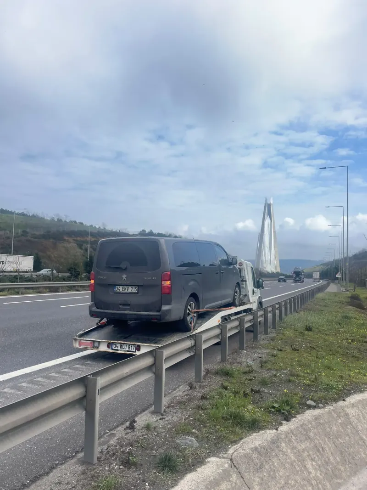

Binek Otomobil
Binek Otomobil
Maslak Büyükdere Caddesi Çekimi
Mekanik arıza yaşayan sedan aracın Maslak 1. Kısım Sanayi'ye hasarsız nakli.
 Lüks & Spor
Lüks & Spor
Bebek - Maslak Spor Araç Transferi
Özel sıfır açılı rampa aparatı ile tampon sürtmeden gerçekleştirilen nakliye.
 SUV / 4x4
SUV / 4x4
İstinyePark Önü SUV Kurtarma
Şanzıman kilitleyen 4x4 aracın diferansiyel korumalı transferi.
 Motosiklet
Motosiklet
Barbaros Bulvarı Motosiklet Nakli
Ön teker sabitleme kıskacı ve 4 noktadan gergi kayışıyla dik nakliye.

Hafif TicariCendere Vadisi Panelvan Transferi
Yüksek tavanlı kargo minibüsünün güçlendirilmiş platformla taşınması.
 Kaza & Vinç
Kaza & Vinç
Hasdal - Kemerburgaz Otoyol Kurtarması
Bariyer çarpması sonucu yürümeyen aracın çift halatlı vinçle tahliyesi.
 Binek & Hatchback
Binek & Hatchback
Sarıyer Çayırbaşı Yolu Çekimi
Hararet yapan aracın Hacıosman yokuşundan Maslak Sanayi'ye çekilmesi.
 Lüks & Basık Araç
Lüks & Basık Araç
Nişantaşı Abdi İpekçi Transferi
Düşük şasili lüks coupe aracın yetkili bayiye kaskolu sevki.
 SUV
SUV
Göktürk Kemer Country SUV Tahliyesi
Elektronik akü arızası yaşayan lüks SUV'un güvenli nakli.